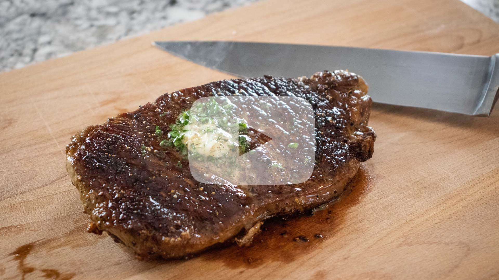

Garlic Butter Steak
Butter Compound
- - 3 tablespoons of finely chopped parsley
- - 1 stick of room temperature butter
- - 2 cloves of garlic
- - Salt and pepper (to preference)
- *optional* additional herbs of your preference
Steak
- - Steak (cut of your choice)
- - Salt and pepper (to preference)
- - 2 tablespoons of Avocado oil
Directions:
Butter Compound
- 1. In a glass cup or bowl, add butter, parsley, salt, and pepper.
- 2. Using a garlic press, press the two cloves of garlic into the glass bowl with other ingredients.
- 3. Mix all ingredients together thoroughly.
- 4. On a sheet of wax paper, pour herb butter mixture. Roll up wax paper, twisting the ends when rolled up, to form a stick of butter.
- 5. Allow to rest overnight in refrigerator.
Steak
- 1. Take steak out of refrigerator, allow to rest out of the refrigerator for 20 - 30 minutes.
- 2. After resting 20 - 30 minutes, preheat cast iron pan over medium to medium-high heat.
- 3. Once preheated, add avocado oil to cast iron pan.
- 4. While oil is heating up, season steak generously on both sides.
- 5. Once the oil is hot, add the steak to the pan.
- 6. Cook steak for 2 - 4 minutes on both sides (depending on steak thickness and preferred doneness, you want to monitor cooking times accordingly).
- 7. When steak is 30 seconds from being done, add a chunk of butter compound. Baste steak with butter for 30 seconds.
- 8. Remove steak from pan, apply another chunk of butter compound to steak. Allow to rest for a couple minutes.
- 9. Serve and enjoy.